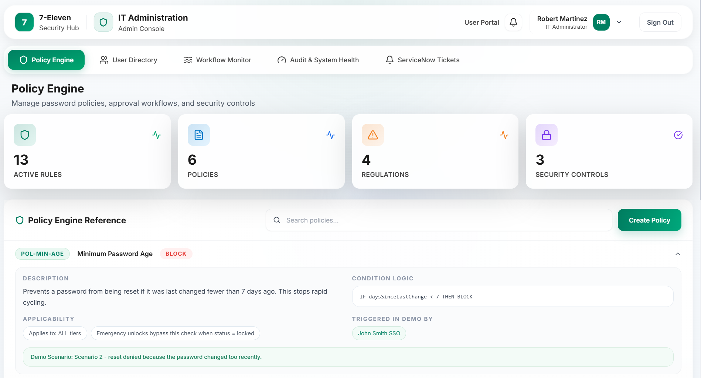
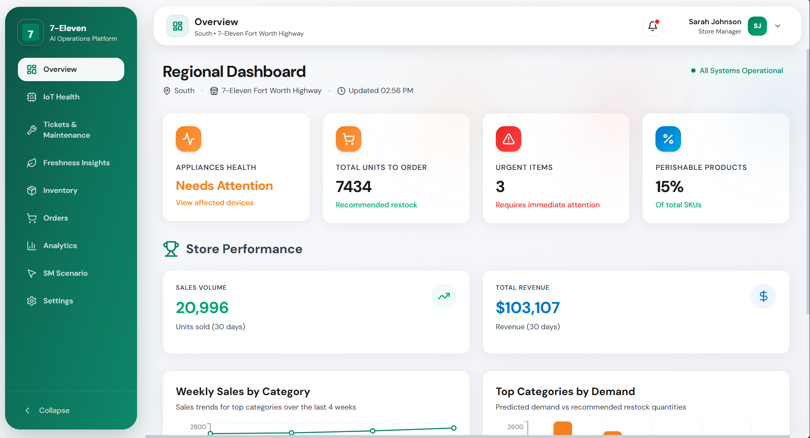
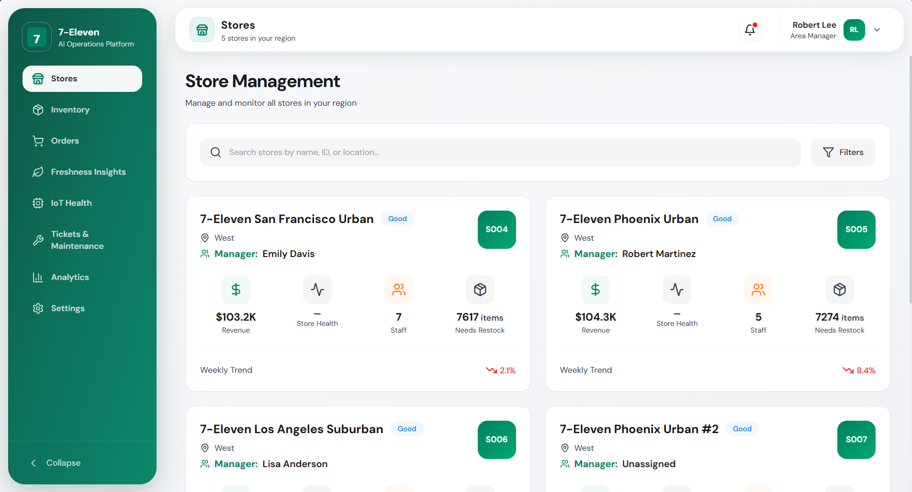
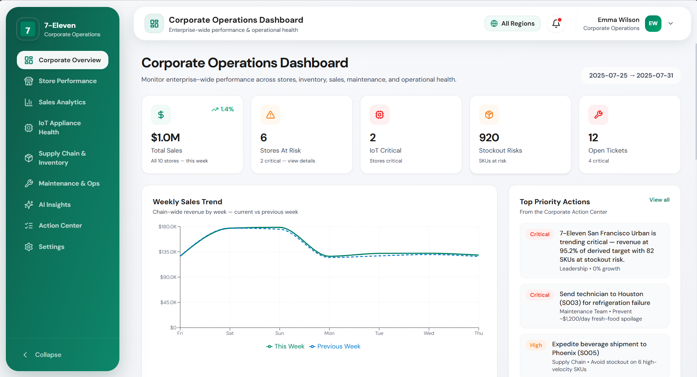
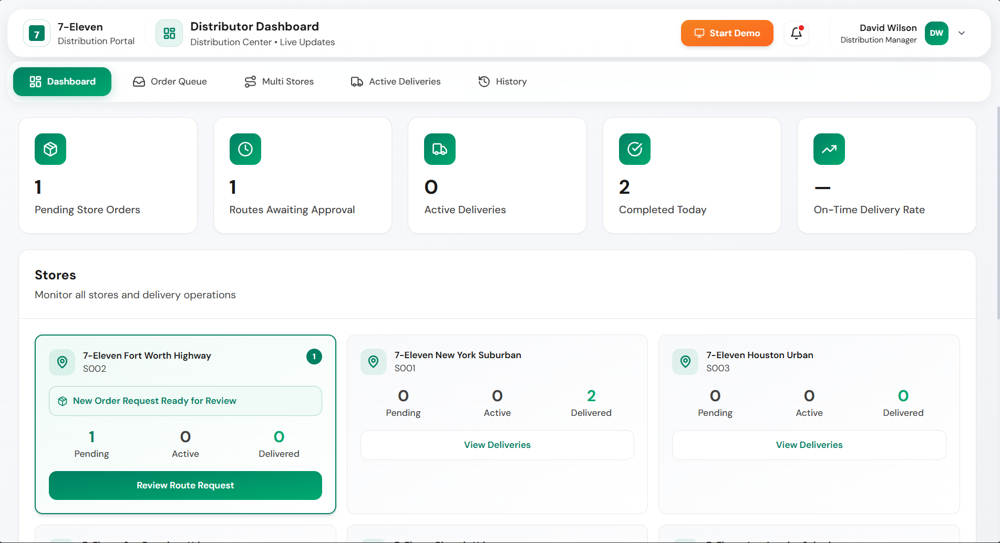
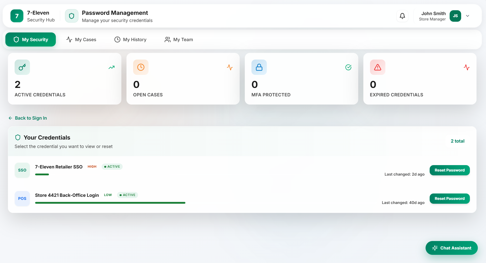

Regional Dashboard
Designing a unified AI operations platform for 7-Eleven — serving Store Managers, Area Managers, Corporate leadership, Distributors, and IT Admins from one consistent design system.
7-Eleven's operations span thousands of store locations, each generating data that multiple roles depend on — but historically, each role used disconnected tools with no shared visual language or interaction model.
Every operational signal — sales, inventory, appliance health, tickets — flows up through the same underlying system. This made the design system itself the highest-leverage surface, where consistency compounds across six distinct experiences.
The business wanted faster issue resolution and clearer accountability, while frontline managers reported alert fatigue and tool-switching fatigue.
Each role had a separate tool with its own visual language, forcing context-switching even when looking at the same store data.
A critical alert in one tool looked identical to a low-priority note in another — making it impossible to triage at a glance.

Cards, tables, and status pills were rebuilt differently in each experience, multiplying design and engineering effort.
Password reset and IT admin tools looked nothing like the operational dashboards, breaking trust in the entire system.
We ran discovery sessions across all six role types — shadow sessions with store managers, executive briefings with VPs, and deep-dives with IT admins. Here's what kept surfacing.
I check four different screens before I even know if today is going to be a good day. By then I've already missed the morning rush.
Store ManagerI want to see all my stores at a glance. Right now I have to click into each one just to know if anything needs attention.
Area ManagerBy the time I see a problem in my report, it's already cost us money. I need a way to catch risks before they become losses.
Corporate VP of OperationsEvery reset request looks the same to me until I open it. I have no idea if it's urgent or routine until I'm already inside the ticket.
IT AdminDelivery tracking is scattered across emails, a spreadsheet, and the old portal. I need one place to see what's moving and what's stuck.
Distributor ManagerAdapted from stakeholder interviews across store, regional, and corporate roles.
One shared component library: the same card patterns, status pills, and KPI tiles regardless of which persona is looking at them.
Color, iconography, and hierarchy working together — so a Critical alert reads as critical whether you're a store manager or a VP.
Password Management and the IT Policy Engine should look and feel like part of the same product family, not an afterthought.





The Corporate Manager dashboard aggregates signals from every layer of the operation — store-level IoT alerts, supply chain gaps, sales vs. target variance — into a single synthesized view.
Rather than building a custom data model for each persona, we asked: what does this role need to decide right now? That question shaped the information hierarchy, and the shared design system made each answer feel native to the same product.
The result: VPs can spot a revenue risk before it becomes a reporting issue. Area managers can act on a single store without losing sight of their portfolio.
The IT Admin panel had to enforce strict compliance — PCI-DSS, SOX, MFA mandates, executive-level password policies — without feeling like a bolted-on enterprise tool.
We brought the same card-based KPI system (22 active rules, 7 locked accounts, 5 high-risk credentials) into the security layer, and expressed complex policy logic as human-readable IF/THEN conditions:
Admins see the logic they authored reflected back as clear rules — not encoded in a policy engine only they can read.